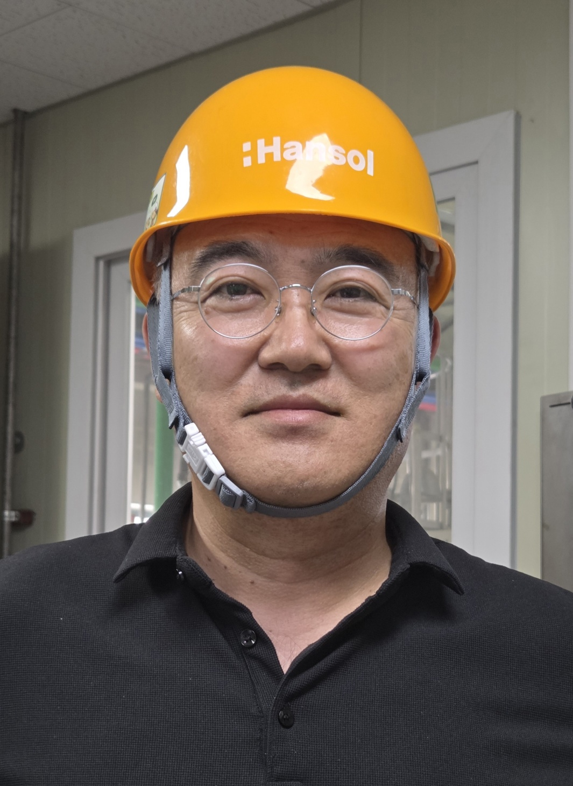

제조 현장의 문제를 데이터로 정의하고 생산성·원가·품질 성과로 연결해 왔습니다.
30년의 경력은 하나의 직무에 머문 시간이 아니라 책임 범위를 넓혀 온 과정입니다.
생산 혁신, 기술 사업화, 업무 혁신을 중심으로 축적된 경험입니다.
생산체제 구축과 원가혁신. 생산·공정·품질의 현장 경험을 기반으로 Capa 확보와 에너지·원가 개선을 정량 성과로 연결했습니다.
연구를 양산 사업으로 연결. 공정·설비·Capa·조달·인허가·물류·시운전까지 사업화 전 과정을 통합적으로 관리합니다.
AI를 실제 업무 구조에 연결. 프로젝트 관리, 문서 분석, 업무 허브와 파일 지식화를 통해 업무 방식을 개선하고 있습니다.
AI 활용을 개인 생산성에 한정하지 않고 프로젝트와 조직의 업무 흐름에 적용합니다.
제조 현장의 기본기에서 기술·사업, 신소재 프로젝트 리더십으로 확장해 온 경력입니다.
친환경 신소재 · 신소재 R&D · Project Management
기술환경 · 연구기획 · M&A · 신사업
생산관리 · 공정기술 · 생산팀장 · 품질관리
현장에서 시작해 데이터로 개선하고, 기술을 사업으로 연결했습니다. 지금은 AI와 함께 새로운 업무 방식을 만들고 있습니다.